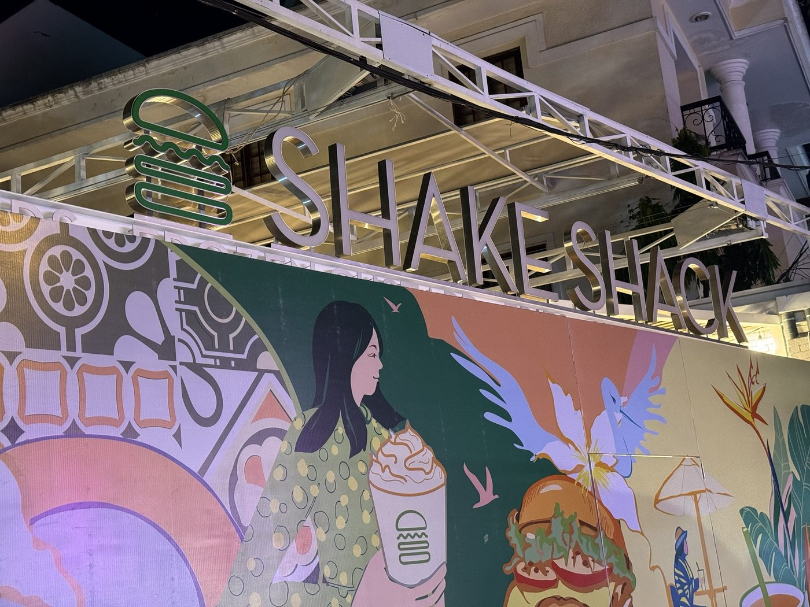
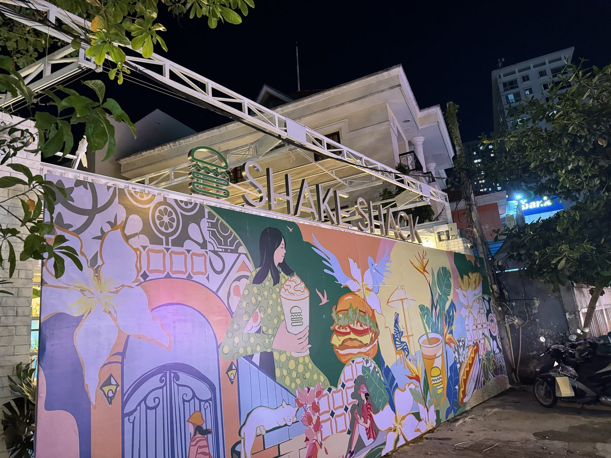
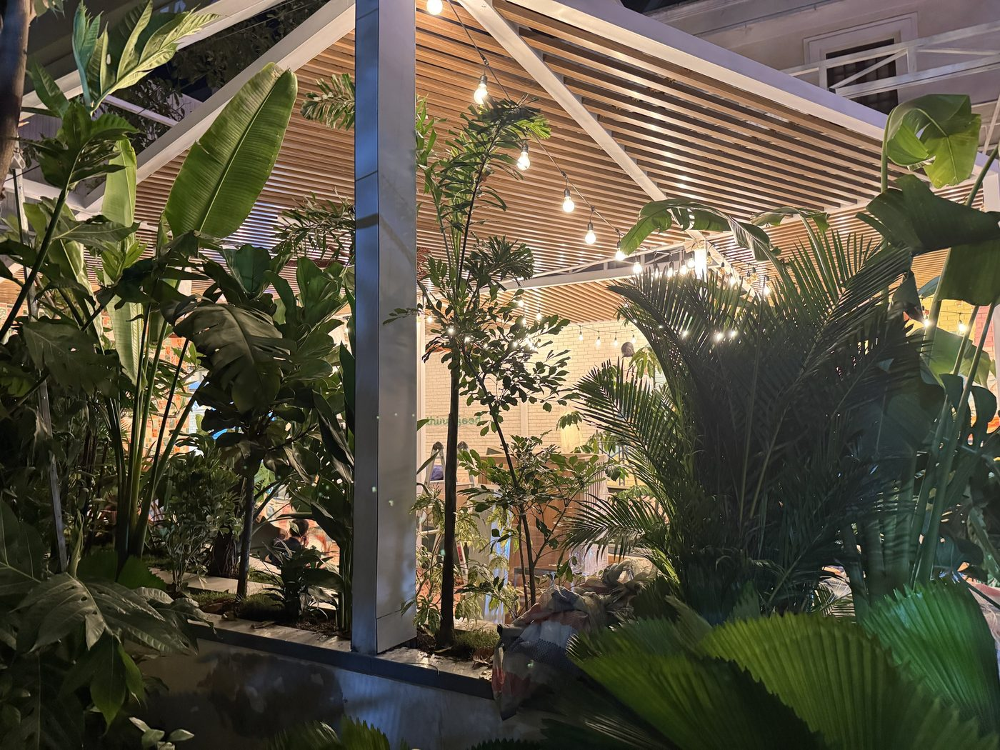
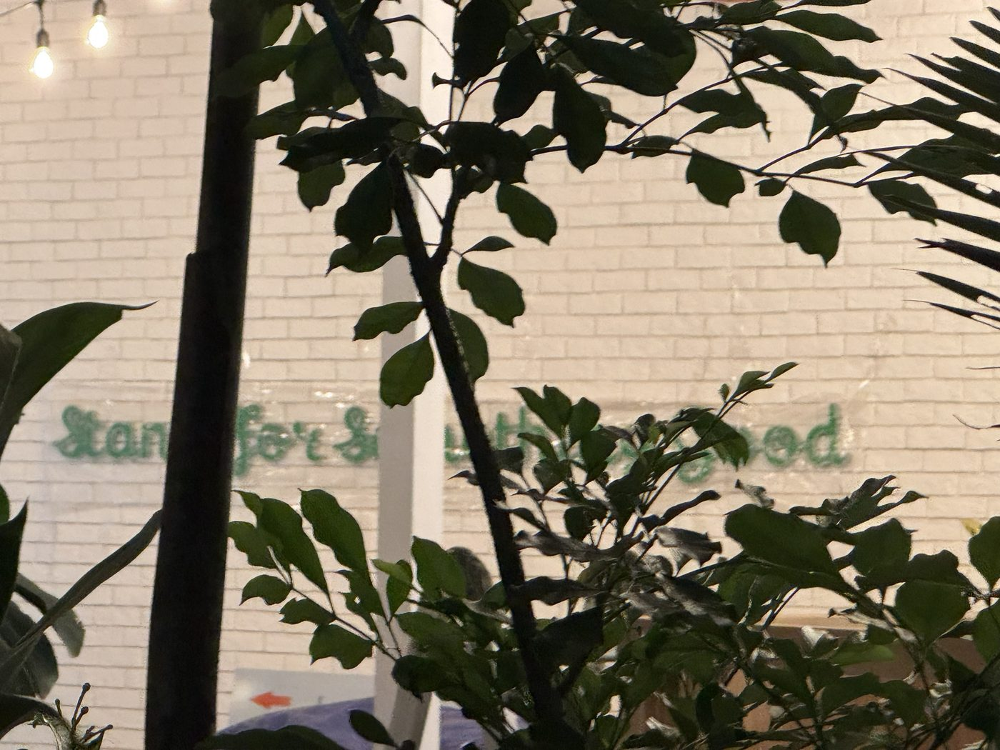

Shake Shack sắp có mặt tại TP.HCM: ảnh thực tế cửa hàng đang hoàn thiện và những điều đã biết
Thương hiệu burger Mỹ Shake Shack đã công bố kế hoạch vào Việt Nam từ tháng 8/2025. Đến tháng 11/2026, một cửa hàng mang biển hiệu Shake Shack tại TP.HCM đã được dựng xong mặt tiền, phần nội thất bên trong vẫn đang hoàn thiện. Bài này gồm ảnh do chúng tôi trực tiếp chụp ở cửa hàng đó và những thông tin đã đối chiếu được từ công bố của doanh nghiệp.
- Kế hoạch đã công bố: 15 cửa hàng tại Việt Nam đến năm 2035; cửa hàng flagship đầu tiên dự kiến ra mắt trong năm 2026.
- Đối tác nhượng quyền: Maxim’s Caterers Limited.
- Ngày khai trương và địa chỉ chính thức: chưa tìm thấy thông báo chính thức trong các nguồn chúng tôi kiểm tra, nên bài này không nêu.
- Hiện trạng cửa hàng trong ảnh: biển hiệu và mặt tiền đã hoàn chỉnh; bên trong còn thang, vật liệu bọc và đang lắp đặt.
1. Những gì Shake Shack đã công bố
Trong thông cáo ngày 12/8/2025 trên trang quan hệ nhà đầu tư, Shake Shack cho biết cùng Maxim’s Caterers Limited dự kiến mở 15 cửa hàng tại Việt Nam đến năm 2035, với cửa hàng flagship đầu tiên ra mắt trong năm 2026. Thông cáo không nêu thành phố của cửa hàng đầu tiên. Thực đơn được nhắc tới gồm ShackBurger, Chicken Shack, Chicken Bites, khoai tây cắt lượn sóng, bia ShackMeister, rượu vang Shack Red/Shack White, nước chanh và kem custard làm tại chỗ. Công ty cũng cho biết sẽ hợp tác với nhà cung cấp và nghệ sĩ địa phương.
Theo bài của The Viet Media (9/4/2026), Shake Shack đã hoàn tất đăng ký nhượng quyền tại Việt Nam từ tháng 6/2025. Bài này cũng cho biết Maxim’s đang vận hành 52 cửa hàng Shake Shack ở Trung Quốc đại lục, Hồng Kông, Ma Cao và Thái Lan, và điều hành chuỗi Starbucks tại Việt Nam qua công ty con Coffee Concepts.
2. Ảnh thực tế: cửa hàng đang hoàn thiện
Các ảnh dưới đây do Soi Giá Dự Án tự chụp vào buổi tối. Chúng tôi không ghi địa chỉ cụ thể vì chưa có thông báo chính thức từ doanh nghiệp.


Điểm dễ nhận thấy là cửa hàng dùng một ngôi nhà kiểu biệt thự hai tầng làm không gian chính, phía trước dựng khung thép và tấm tranh lớn che mặt tiền. Họa tiết gạch hoa, hoa sứ và hình ảnh quán cà phê vỉa hè trong tranh cho thấy cách thương hiệu địa phương hóa hình ảnh; đây là nhận xét từ quan sát ảnh, không phải thông tin do Shake Shack công bố.


Bên trong, tường gạch trắng, trần gỗ nan và dây đèn tạo không gian khá nhẹ. Vật liệu bọc và thang gấp còn đặt gần quầy, nên đây chưa phải hình ảnh cửa hàng đã đi vào hoạt động. Dòng chữ “Stand for Something Good” là khẩu hiệu quen thuộc của thương hiệu.
3. Điều chưa xác định
- Ngày khai trương: chưa có thông báo chính thức trong các nguồn đã kiểm tra.
- Địa chỉ chính thức và giờ mở cửa: chưa có; nên theo dõi trang và kênh mạng xã hội của Shake Shack hoặc Maxim’s.
- Giá thực đơn tại Việt Nam: chưa được công bố, chúng tôi không đưa con số ước tính.
- Có phải cửa hàng flagship đầu tiên hay không: các nguồn chưa xác nhận.
4. Vì sao tin này được đăng trên trang bất động sản?
Người đang tìm nhà hoặc đánh giá một khu dân cư thường quan tâm đến tiện ích xung quanh: nhà hàng, quán cà phê và các thương hiệu bán lẻ. Việc một chuỗi quốc tế thuê và cải tạo một ngôi nhà phố, biệt thự để mở cửa hàng là một tín hiệu để theo dõi hoạt động thương mại của khu vực. Tuy vậy, một cửa hàng đơn lẻ không đủ để kết luận về giá thuê hay giá bán bất động sản xung quanh, và bài này không đưa dự báo giá.
Để so sánh, The Viet Media cho biết ngày 8/4/2026 Burger King đã đóng ba cửa hàng cuối cùng tại Hà Nội và rút khỏi thành phố này. Điều đó cho thấy thị trường đồ ăn nhanh vẫn có biến động giữa các thương hiệu.
Câu hỏi thường gặp
Shake Shack TP.HCM khai trương khi nào?
Shake Shack công bố cửa hàng đầu tiên tại Việt Nam dự kiến ra mắt trong năm 2026. Chúng tôi chưa tìm thấy ngày khai trương chính thức, nên chưa thể nêu ngày cụ thể.
Shake Shack sẽ có bao nhiêu cửa hàng ở Việt Nam?
Kế hoạch công bố là 15 cửa hàng đến năm 2035, cùng đối tác Maxim’s Caterers.
Ảnh trong bài có phải ảnh chính thức không?
Không. Đây là ảnh tự chụp, thời điểm cửa hàng chưa mở, và có thể khác khi cửa hàng chính thức hoạt động.